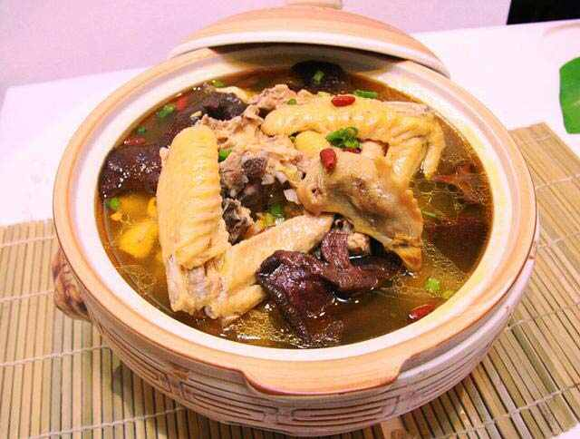

特色物产
清炖狼山鸡
清炖狼山鸡，又名原焖狼山鸡，采用狼山当地土鸡为主要原料，成品汤汁清澈见底，皮白有光，微兼腊香，汤菜兼优。

白蒲茶干 白蒲“三香斋”茶干（简称白蒲茶干），至今已有三百多年历史了，是南通地方久负盛名的传统风味土特产。“白蒲茶干”选用优质大豆，多种香料精制而成。“白蒲茶干”始制于清康熙年间，有一姓屠的湖州人在白蒲北街
开的一豆腐干店，店号“三香斋”，又名“屠三香”。 白蒲北街是南北交通要道，商业较盛，每日清晨，商民，街坊乡老，小贩等都喜欢坐茶馆，闲谈生意经，一边谈心，一边买来屠氏的豆腐干佐茶。因其近似茶色，又是名茶配食的佳品，
故取名茶干。到康熙三十五年，“屠三香”生产的茶干由于加工工艺精细，色、香、味俱佳，并在茶干上模压店号，颇有特色，被誉为“白蒲一绝”。